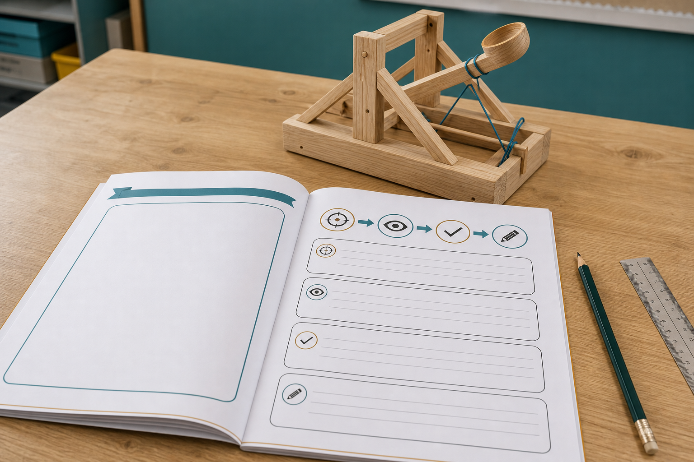
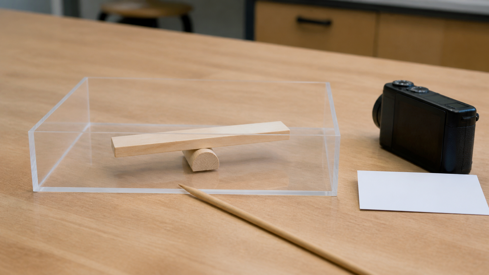
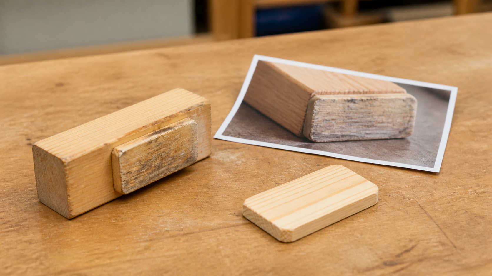
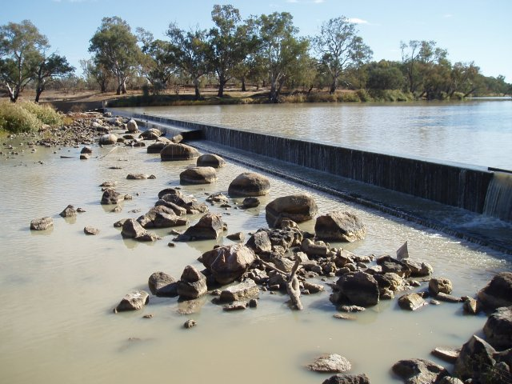

The most powerful demonstration must be the most successful.
Success is judged against the confirmed brief and evidence, which may value control, consistency, stability and communication.
Module 10 of 10
The final stage communicates what the system does and what the evidence means. A calm, teacher-controlled demonstration is not a contest for maximum power. It is one source of evidence within a broader evaluation of the product, the process and the designer's learning. Systems thinking can also help students notice relationships in other engineering contexts when cultural authority and purpose are respected.
Use this page to learn and prepare. Follow your teacher's demonstration, approved tools, local safety controls and testing instructions for every practical action.

Theory 1 of 3
A demonstration communicates an intended function under confirmed conditions. The presenter should identify the system purpose, point out key component relationships and direct attention to the evidence being gathered. Maximum distance or dramatic movement is not automatically the goal. A controlled, repeatable demonstration often communicates more engineering knowledge because the audience can connect an observation to the design decision being explained.
All operating conditions, projectiles, spaces and supervision are set by the teacher. Student preparation should therefore focus on communication: what the audience should notice, which evidence will be recorded, and how the result relates to the confirmed brief. If the system does not behave as expected, that is still useful evidence. A truthful explanation of the difference between prediction and result is stronger than hiding an inconvenient outcome.

Multiple-choice knowledge check
Choose an answer, check the feedback and try again if needed. Your checked progress is saved on this device.
0 of 4 questions checkedSaved on this device
Longer response
Write the explanation you would give during a teacher-controlled demonstration. Communicate the intended function, one key component relationship, the repeated evidence the audience should notice and how you would respond if the result differed from the prediction.
Use the scaffold to explain and justify your thinking. No drawing is required. Your writing autosaves in this browser.
Formative learning evidence — not proof of submission.
Theory 2 of 3
Product evaluation judges the completed solution against the confirmed brief and criteria. Process evaluation examines planning, production, testing and decisions. Personal evaluation reflects on changes in knowledge, skills and attitudes without becoming a diary of feelings alone. Environmental evaluation considers material and process effects. These views overlap, but separating them helps produce a complete judgement.
A useful evaluation follows criterion, evidence, judgement and improvement. Name the confirmed criterion, present the most relevant evidence, judge how well it was met, then propose a realistic improvement connected to the cause. Avoid judging only by appearance or personal preference. Also avoid claiming that every problem could be fixed simply by adding more power, material or time; an improvement should address the evidence and consider system trade-offs.

Multiple-choice knowledge check
Choose an answer, check the feedback and try again if needed. Your checked progress is saved on this device.
0 of 4 questions checkedSaved on this device
Longer response
Choose one teacher-confirmed criterion and build a complete evaluation. Judge the product with evidence, explain one process or learning change, then recommend an improvement that addresses a likely cause and predicts an effect on the wider system.
Use the scaffold to explain and justify your thinking. No drawing is required. Your writing autosaves in this browser.
Formative learning evidence — not proof of submission.
Theory 3 of 3
Heritage NSW describes Baiame’s Ngunnhu / Brewarrina Aboriginal Fish Traps as a complex of dry-stone walls and holding ponds across part of the Barwon River. The system works with changing river flows. Ngemba people are the custodians and continue to have responsibilities for the fishery. Its cultural, spiritual, social, ceremonial and trade meanings matter, so it cannot be reduced to a diagram about physical efficiency. The selected authoritative source does not require an exact-age claim, and this course does not invent one.
Budj Bim Cultural Landscape is in Gunditjmara Country and is a living, continuing cultural landscape. Gunditjmara and UNESCO sources connect the volcanic landscape, waterways, channels, weirs and dams with managing water and trapping, storing and harvesting kooyang. UNESCO records at least 6,600 years of deliberate modification and management and the 2019 World Heritage inscription. A responsible systems explanation includes people, knowledge, custodianship and care for Country; neither place is a catapult analogy or a generic design template.

Multiple-choice knowledge check
Choose an answer, check the feedback and try again if needed. Your checked progress is saved on this device.
0 of 4 questions checkedSaved on this device
Longer response
Choose either Baiame’s Ngunnhu / Brewarrina Aboriginal Fish Traps or Budj Bim Cultural Landscape. Using the named authoritative source on this page, explain the connected relationships the source supports, identify the people and continuing responsibilities, and justify why the system must remain distinct from the Catapult project.
Use the scaffold to explain and justify your thinking. No drawing is required. Your writing autosaves in this browser.
Formative learning evidence — not proof of submission.
Worked example
Vocabulary
Common traps
Success is judged against the confirmed brief and evidence, which may value control, consistency, stability and communication.
Evaluation connects a confirmed criterion to evidence, a judgement and a realistic improvement.
Video learning · 2:00
Department of Climate Change, Energy, the Environment and Water
Watch for: How do water, volcanic stone, channels, kooyang, people and care for Country interact as one continuing managed system?
Source boundary: Use Gunditjmara and Budj Bim Cultural Landscape. The video title reflects the 2019 inscription moment; do not reduce the landscape to physical infrastructure or a Catapult analogy.

Read the attributed Gunditjmara, UNESCO and DCCEEW summary and inspect the clearly schematic connected-systems map.
The privacy-enhanced player loads only when you choose it.
Applied Learning Activity
Practise selecting evidence for a calm explanation and writing an evaluation that respects connected Aboriginal engineering contexts.
Evidence to save: Demonstration note, two evaluation loops and respectful systems-context statement, saved as formative practice.
Type the response, reasoning or record requested above. It autosaves in this browser.
Use: ‘The evidence shows ___. Against the criterion, I judge ___. A realistic improvement is ___.’
Compare how maintenance and feedback sustain two unrelated systems while explicitly preserving their different purposes and cultural contexts.
Higher-order evidence
Prepare a concise final explanation that evaluates your Catapult project and demonstrates systems thinking without turning Aboriginal engineered systems into a design analogy.
Type your response. No drawing is required. It autosaves in this browser.